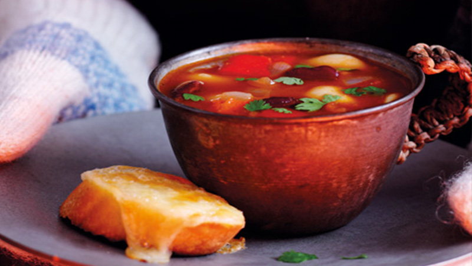

<!--
 Name:Neville Zou
 Student Id:
-->
<div class="pages">
<div data-page="projects" class="page no-toolbar no-navbar">
   <div class="page-content">
   <!--top header-->
      <div class="navbarpages">
         <div class="nav_left_logo"><a href="index.html"></a></div>
         <div class="nav_right_button">
		 <!--A link to Open Main Nav-->
            <a href="menu.html"></a>
			<!--A link to go back to Previous Page-->
            <a href="food-menu.html"></a>
         </div>
      </div>
	  <!--top header-->
      <div id="pages_maincontent">
          <!-- the header information of the page -->
         <h2 class="page_title">Our Recepie</h2><!-- heading tag-->
         <div class="post_single">
		 <!--Recipe Image And title-->
            <div class="featured_image">
               <!-- image tag for diplay image in browser-->
               <div class="post_title_single">
                  <h2>Chilli bean soup with cheesy garlic bread</h2>
               </div>
                
            </div>
		<!--Recipe Image And title-->
		 <!--Recipe Detail-->
            <div class="page_content">
               <div class="entry">
                  <ul class="simple_list"><!-- unorder list-->
                     <li>Heat the oil in a large pan over a medium-high heat and cook the onion for 5 minutes until softened. Stir in the garlic, tomato purée and spices and cook for 1 minute, then add the chopped tomatoes and stock. Bring to the boil, cover and simmer for 10 minutes. Remove from the heat, allow to cool slightly then whizz in a blender, and return to the pan.</li><!-- list Element-->
                     <li> Add the beans and red pepper, bring back to the boil and cook for 10 minutes. Season to taste and add extra stock or water if you prefer a thinner consistency.
                     </li>
                     <li> Meanwhile, grill one side of the baguette slices. In a bowl, combine the butter, garlic and cheese and spoon onto the untoasted sides of the bread. Grill for a few minutes until golden and bubbling. Divide the soup between 6 bowls or cups and scatter over the coriander. Serve with the cheesy garlic bread.
                     </li>
                  </ul>
               </div>
            </div>
		 <!--Recipe Detail-->
         </div>
      </div>
   </div>
</div>